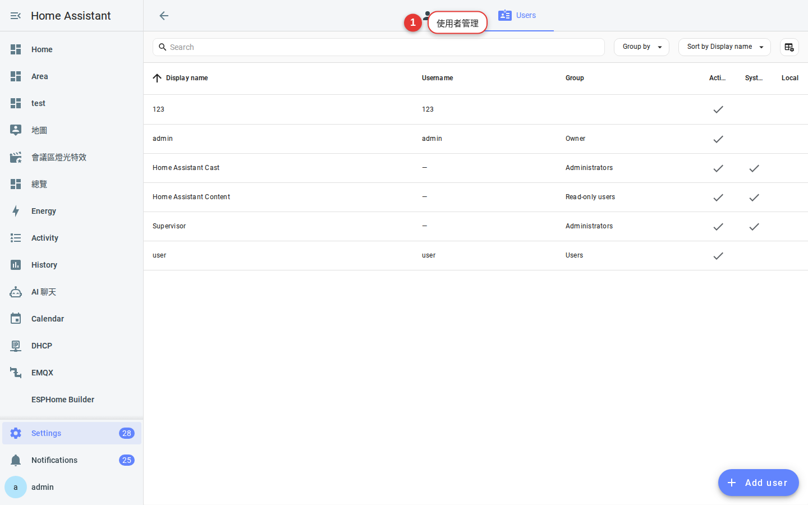
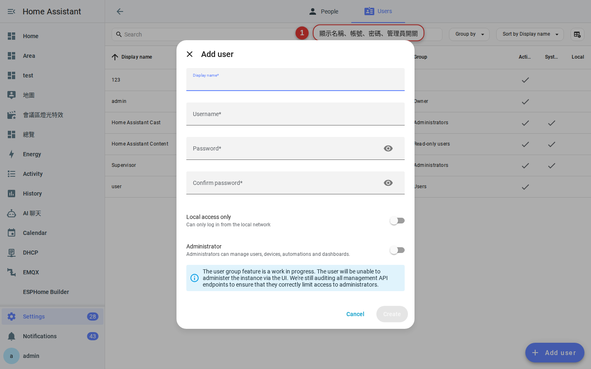
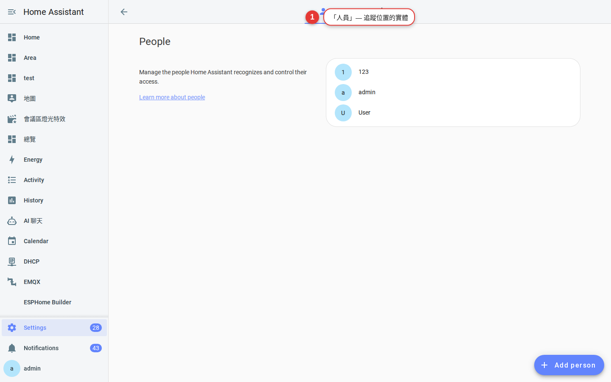

第 5 章
用戶管理
幫家人、房客、訪客各自建帳號。管理員能改設定；一般用戶只能操作。同時建立「人」的實體，之後可以偵測「誰在家」。
為什麼要建多個帳號
- 安全：家人共用一個管理員帳號，一個人手機掉了，全家都要換密碼。
- 權限：小孩不小心刪掉自動化就慘了。給他「一般用戶」只能操作、不能改設定。
- 手機通知：一個帳號在一支手機上登入，才能精準推播給那個人。
- 「誰在家」：每個「人」對應一支手機的定位，才能寫「爸爸回到家自動開燈」。
兩個名詞：Users vs. Persons
- User（使用者）：可以登入 HA 的帳號，有密碼、有權限。
- Person（人）：家中的一個「人」實體，用來追蹤位置、當自動化條件。
兩者可以綁定：例如「使用者 alice」對應「人 Alice」，Alice 手機裝了 App 登入後，就能把定位餵給那個「人」。
簡單原則：會用 HA 的家人 → 建 User + Person 綁定。
只需要被追蹤位置的（例如小孩沒有手機 App，用 GPS 標籤）→ 只建 Person。
只需要被追蹤位置的（例如小孩沒有手機 App，用 GPS 標籤）→ 只建 Person。
建立帳號步驟
-
設定 → 使用者

圖 5-1使用者管理頁 — 顯示所有可登入帳號。 -
右下「＋ 新增使用者」
填顯示名稱、使用者名稱（登入用）、密碼。

圖 5-2新增使用者 — 注意「管理員」的開關。 -
決定是不是管理員
管理員：可以改所有設定、裝整合、建自動化。
一般使用者：只能操作介面上看得到的東西。建議：一家人裡最多 2 個管理員（你 + 另一半），其他人一般使用者就好。 -
「僅限本地登入」
開了之後這個帳號只能在家裡的區網登入，遠端網址進不來。訪客帳號建議打開。
-
把新帳號告訴對方
告訴家人網址 + 帳號 + 密碼，讓他們用 App 登入（第 7 章）。之後他們可以自己在「使用者設定」改密碼。
建立「人」並綁定
-
設定 → 人員

圖 5-3人員管理頁 — 每個人可以綁一個使用者、多個定位裝置。 -
「＋ 新增人員」→ 填名字、大頭照
名字建議用暱稱，例如「爸爸」「妹妹」— 儀表板卡片會顯示這個。
-
綁定使用者帳號
下拉選單選剛才建的 user。綁定後，這個「人」的定位就會用他手機的 App 定位。
-
其他定位方式
沒 App 的家人（老人、小孩）可以用：GPS 標籤（AirTag / mi-tag）、路由器上線偵測、藍牙信標。都在「人員」頁下方的「追蹤裝置」加。
常見問題
一個 User 能綁多個 Person 嗎？
不行，一對一。但一個 Person 可以有多個追蹤裝置（手機、GPS 標籤同時追蹤）。
一般使用者能看到所有設備嗎？
預設可以看到所有儀表板。可以在儀表板設定裡限制「只有這些使用者可看」，做出各自不同的家用畫面。
刪掉使用者，他做過的操作紀錄還在嗎？
歷史紀錄還在，但顯示成
Deleted user。想保留就別刪，只要拿掉管理員權限即可。